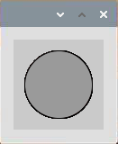
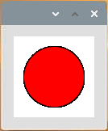

Blinking Dot¶
In this project, we will draw a dot on Processing, which blinks synchronously with the LED. Please build the circuit as shown in the diagram and run the sketch.
 Wiring

Sketch
import processing.io.*;
int ledPin = 17;
boolean state = true;
void setup() {
size(100, 100);
frameRate(2); //set frame rate
GPIO.pinMode(ledPin, GPIO.OUTPUT); //set the ledPin to output mode
}
void draw() {
state = !state;
if (state==true) {
GPIO.digitalWrite(ledPin, GPIO.LOW); //led on
fill(255, 0, 0); //set the fill color of led on
} else {
GPIO.digitalWrite(ledPin, GPIO.HIGH); //led off
fill(155); //set the fill color of led off
}
ellipse(width/2, height/2, width*0.75, height*0.75);
}
How it works?
At the beginning of the sketch, you need to embed Processing’s GPIO function library by import processing.io.*;, which is indispensable for circuit experiments.
Frame rate is the frequency of bitmaps appearing on the board, expressed in hertz (Hz). In other words, it is also the frequency at which the draw() function is called. In setup(), setting the frame rate to 2 will call draw() every 0.5s.
Each call of the draw() function takes the inverse of state and subsequently determines it. If the value is true, the LED is lit and the brush is filled with red; if not, the LED is turned off and the brush is filled with gray.
After completing the judgment, use the ellipse() function to draw a circle. It should be noted that width and height are system variables used to store the width and height of the display window.
There are two other points to note. When using GPIOs, you need to use the GPIO.pinMode() function to set the INPUT/OUTPUT state of the pin, and then use the GPIO.digitalWrite() function to assign a value (HIGH/LOW) to the pin .
Note
Please try to avoid using delay() in draw() because it will affect the display window refresh.
For more please refer to Processing Reference.